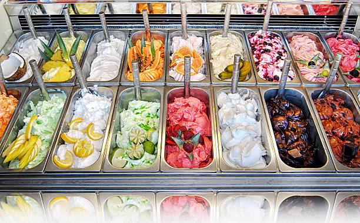

Disfruta de la temporada de verano con estos sabores de helado que puedes preparar en casa.
Llegó la temporada de calor, y con él, ¡deliciosas sabores! Para esta calurosa temporada es cuando mejor podemos disfrutar del postre perfecto: el helado.
Una heladería es un establecimiento en el que se comercializan y se sirven helados. Suele constar de un escaparate refrigerado en el que se encuentran clasificados los diferentes tipos o sabores de helados.
Generalmente se trata de un establecimiento abierto, o de gran entrada, al que puede accederse de forma sencilla. En algunas ocasiones durante la historia las heladerías fueron portátiles dando lugar a los carritos de helados.
Heladería es un establecimiento en el que se comercializan y se sirven helados. Suele constar de un escaparate refrigerado en el que se encuentran clasificados los diferentes tipos o sabores de helados.
Generalmente se trata de un establecimiento abierto, o de gran entrada, al que puede accederse de forma sencilla. En algunas ocasiones durante la historia las heladerías fueron portátiles dando lugar a los carritos de helados.
Sabores de helados

Vainilla
Es el sabor de helado más consumido y, por consiguiente, el más vendido en todo el mundo. Tan solo en Nueva Zelanda y Estados Unidos, dos de los países que más consumen helado en todo el mundo, es el más demandado por la gente.
Chocolate
Al ser un producto de gran popularidad en todo el mundo, el chocolate y sus variantes se ha convertido en uno de los sabores más pedidos. Destaca su variante amargo u oscuro, la cual cuenta con gran demanda en casi toda Europa.
Menta
Quizá no sea tu sabor favorito, pero la población de Estados Unidos opina lo contrario. De acuerdo con diversos datos, este sabor es el segundo más pedido en la nación norteamericana.
Fresa
Es un sabor sumamente popular en casi todo el mundo por sus distinguidos tonos frescos y ligeramente ácidos. Cuenta además con una gran variedad de aditamentos e ingredientes que resaltan su sabor.
De frutas
Los helados a base de frutas se han vuelto sumamente populares en países asiáticos y de Oceanía. En Australia, el tercer país que más consume helado en el mundo, se ha convertido en el sabor más pedido.
Dulce de leche
Este sabor de helado es también uno de los más vendidos en el mundo gracias a su popularidad en países como España. De igual forma, se ha convertido en uno de los más consumidos en casi toda Latinoamérica.
Tipos de helados
Helados de crema y leche
Este tipo de helado se caracteriza por contar con un cierto porcentaje de materia grasa de origen lácteo y proteínas. El nivel de este porcentaje varía de acuerdo al lugar en donde se prepare. Cuenta con una textura suave y fácil de consumir.
Gelato
Es el helado por excelencia gracias a sus características únicas e irrepetibles. Se hace a base de leche, nata, azúcares, frutas, entre otros ingredientes, y cuenta con un nivel de grasa butírica menor al helado tradicional, además de ser bajo en azúcar.
Soft
Es uno de los nombres de helados más conocidos en el mundo, ya que cuenta con una consistencia sumamente suave que lo hace derretirse en poco tiempo. Se suele preparar en máquinas especiales y cuenta con más agua que grasas y azúcares.
Sorbete o nieve
El sorbete o nieve es un tipo de helado que no cuenta con ingredientes grasos en su preparación. No incluye huevo, por lo que su textura es más suave, menos cremosa y más líquida. Su ingrediente principal es el zumo de diversos frutos.
Ice rolls
Es un tipo de helado que comenzó a fabricarse en Tailandia hace décadas, pero que comenzó a tomar relevancia en la última década en países como Estados Unidos y Reino Unido. El helado se coloca sobre una plancha congelada donde se tritura para luego expandir la mezcla y formar pequeños rollos de helado.